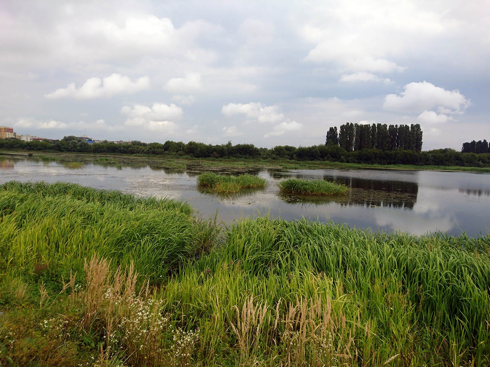
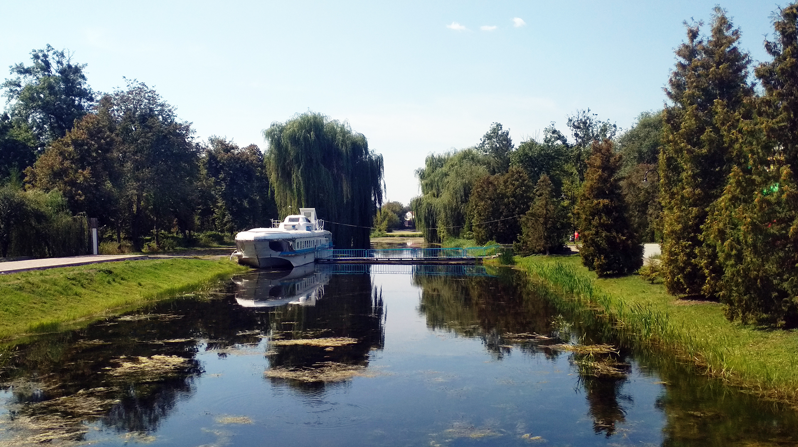

Річка Сапалаївка


Річка Сапалаївка є невеликою річкою, що протікає в Луцьку та впадає у річку Стир.
Головна проблема є скидання у її води відходи. Ця річка дуже часто виходить з берегів і затоплює суходіл.
Розташування
Починається вона з невеликого струмка в селі Гаразджа й прямує на захід до міста Луцьк.
Впадає в Стир.
Екологічні проблеми
Як говорилося раніше вона впадає в річку Стир. Толком річка не очищується. Очищують лише береги,
але від забрудення вод це не допомагає.
Вирішення проблеми
В першу чергу просто необхідно заборонити зливати відходи в цю річку. І біля заводів робити ставки які будуть
зроблені саме для відходів. Далі відчищувати води річки від забрудення Тобто, якщо дуже просто, то річці треба не
косметичний ремонт, а капітальний.
Річка Жидувка

Маленька річка, яка протікає лише в межах Луцька. В неї зливається багато відходів з підприємств.
Екологічна проблема там гірше за ситуацію в Сапалаївці чи Омелянівці.
Розташування
Починається вона трохи західніше від Львівської вулиці, протікає біля колишнього Луцького підшипникового заводу,
а потім впадає в Стир.
Екологічні проблеми
Стічні води та байдужість людей на стан річки. Очищення відбувалося лише в парку і то лише зрізали дерева і кущі.
Вирішення
Завершити зливи шкідливих речовин в річку і поставити штрафи за викид сміття.
Річка Омелянівка


Річка Омелянівка - це є також маленька річка, яка є притокою Стиру. Дуже часто в неї скидають звичайне сміття.
Та і як у випадку з Жидувкою та Сапалаївкою викид стічних вод з підприємств.
Розташування
Починається в селі Антонівка. Далі в 1980-ті роки було збудовано каскад ставків, які були призначені для
рибного господарства.
Екологічні проблеми
Сміття, навіть проїздаючи повз річки видно дуже велику кількість сміття. І як це не було б прикро, але ставки.
Їх не чистять, дуже часто померає величезна кількість риби.
Вирішення проблеми
Очищення води від втручання людини також берегів. Регулярно прочищати русло від сміття і не тільки.
Починати робити заходи задля збереження річки.
Стир

Стир - головна річка Луцька, але вона теж є забруденою.
Розташування

Починається у Львівській області і впадає в Прип'ять на території Білорусі.
Екологічна проблема
Перше, це люди. Візьмемо до прикладу залив. Люди викидають сміття у воду.
Також це заводи, які зливають відходи.
Вирішення
Як у випадку з іншими річками потрібно чистити береги і річку, заборонити зливати відходи.
Глушець(річка, якої нема)

Глушець - одна з приток Стиру, але, на жаль, в 1930-тих роках вона була практично утилізована.
Але вона лишилася, хоч і більшість її вод були осушені. Вона стала каналами в парку. Але не все так добре.
Ставки є забрудненими і мають величезну кількість ряски. Але з кожним роком все більше і більше чистять канали.